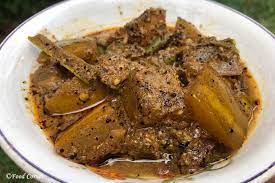
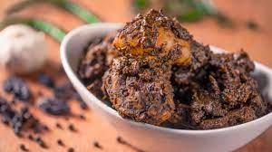
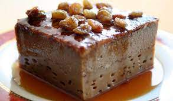

01. Sri lankan Aluwa

It is made of roasted rice flour , boiled treacle, cashew nuts, and cardamom, and is served in the form of a flat cookie. Traditionally, aluwa is served in diamond or square shapes made with a wooden mould.
View Recipe
02. The Creamy Coconut Carrot Curry

This curry is extremely simple to prepare. This is a "dump and cook" recipe, as opposed to other curry recipes. There will be no sautéing or tempering. Simply simmer and cook, then serve with rice!
View Recipe
03. The Traditional Kakiri Curry

Kakiri curry is another delectable Sri Lankan curry that features Ceylon spice flavors. When you cook this curry, the aroma of Ceylon cinnamon combined with spice blends will make everyone's mouth water.
View Recipe
04. Ambulthiyal (Sri Lankan Sour Fish Curry)

Made with Goraka (dried garcinia) and black pepper, this fish ambulthiyal (sour fish) curry not only has a distinct flavor, but it is also a method of preserving fish that does not require refrigeration or freezing.
View Recipe
05. Sri Lankan Watalappan (Cardamom Spiced Coconut Custard)

A traditional Sri Lankan dessert. A creamy baked cardamom spiced coconut custard sweetened with unrefined jaggery or sugar. A deliciously decadent Sri Lankan twist on caramel flan.
View Recipe